Dendra — brand mark concepts (round 2)
Round 1 shipped four concepts (Dendrite / Ascend / Curve / Gate). Ben's feedback: "A looks like a Y and the asymmetry is something I'm still trying to process; B appeals; C conceptually best but least favorite image; D has subtle power." Round 2 applies that feedback to each concept with orientation + execution variants, then hands the full set to three AI design critics for assessment.
A · Dendrite
Name etymology — the tree of decisions.
Round-1 feedback
Likes the idea, but the Y-shape asymmetry (accent on one
branch) is hard to process. Round 2 addresses symmetry
(accent at the node), breaks the Y-literal-read (compound
canopy), and offers an inverted orientation with visible
roots.
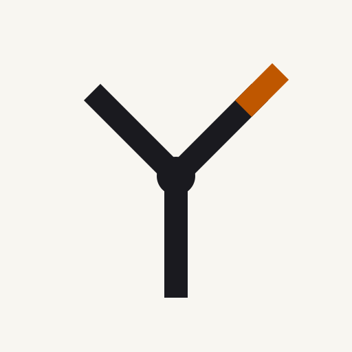
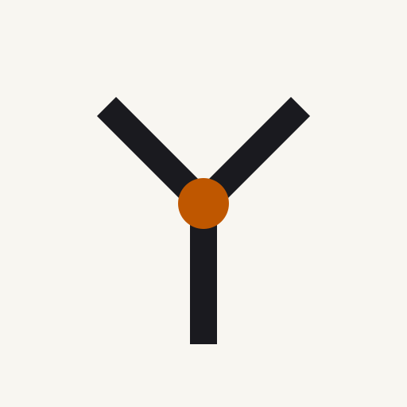
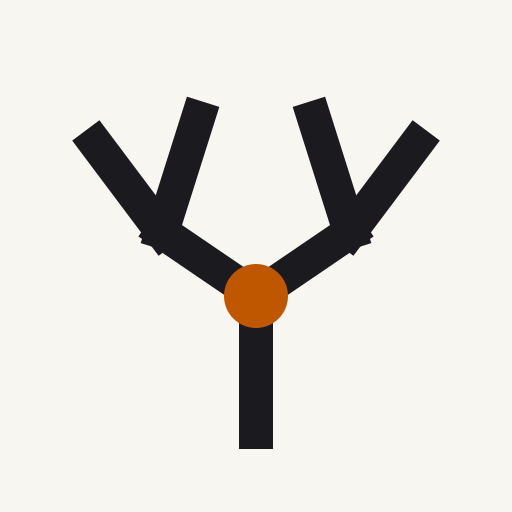
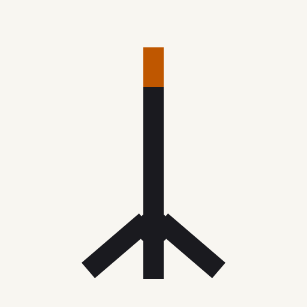
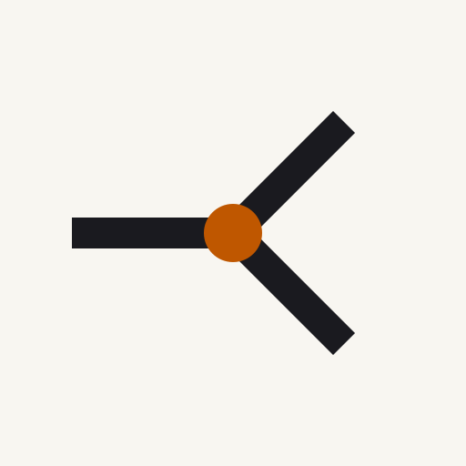
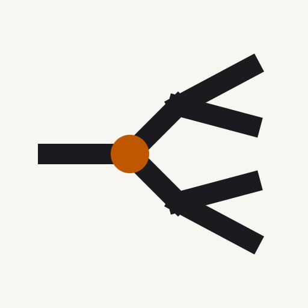
A1 at sizes · wordmark
16
32
96
200
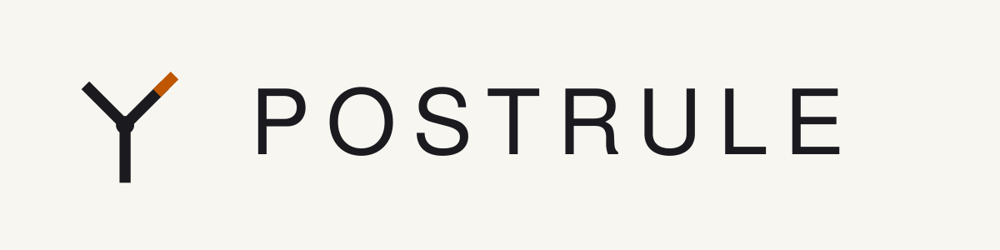
B · Ascend
Lifecycle as shape — six phases, literally.
Round-1 feedback
Appeals. Round 2 tries denser rhythm (B2) and an
architectural stack that drops the staircase reading (B3).
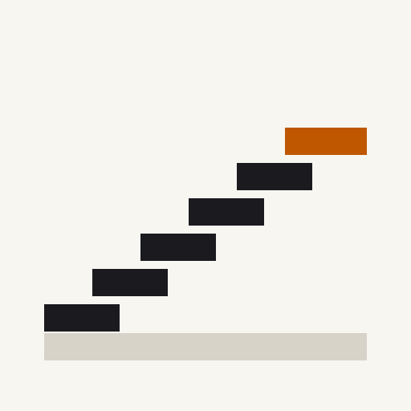
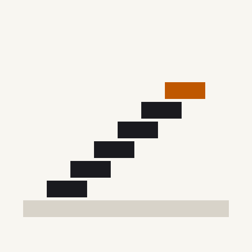
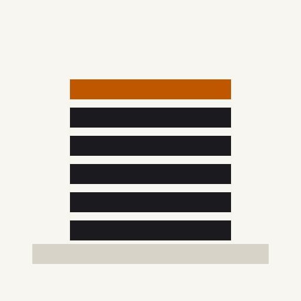
B1 at sizes · wordmark
16
32
96
200
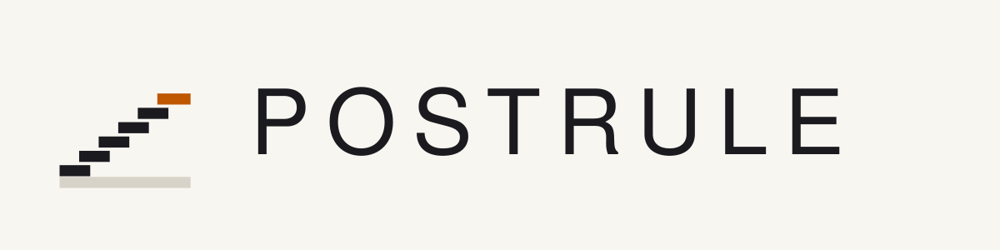
C · Curve
Measurement as mark — Figure 1 collapsed.
Round-1 feedback
Conceptually the favorite, visually the least. Round 2
attempts three stronger executions: minimal (one dot),
tick-marks (ruler-like), and step-function (curve + ascend
hybrid).
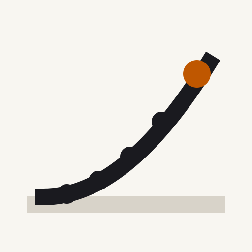
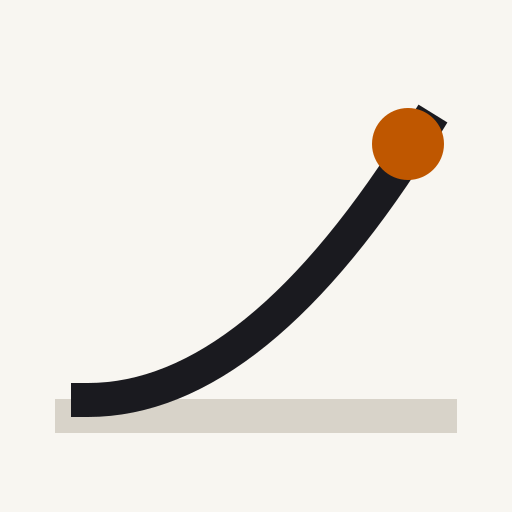
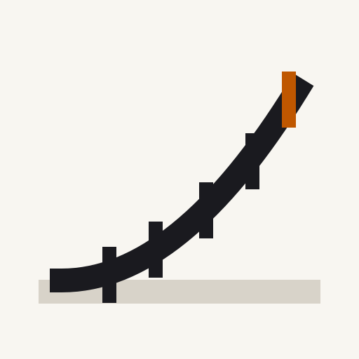
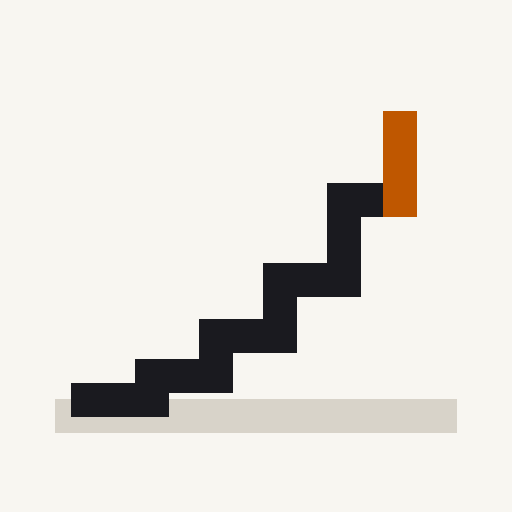
C1 at sizes · wordmark
16
32
96
200
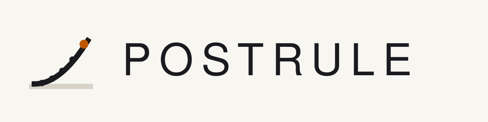
D · Gate
Theorem as architecture — the threshold crossed.
Round-1 feedback
"Cool and has a subtle power." Round 2 tries two small
strengthenings: rising-through (dynamic) and open-threshold
(minimalist).
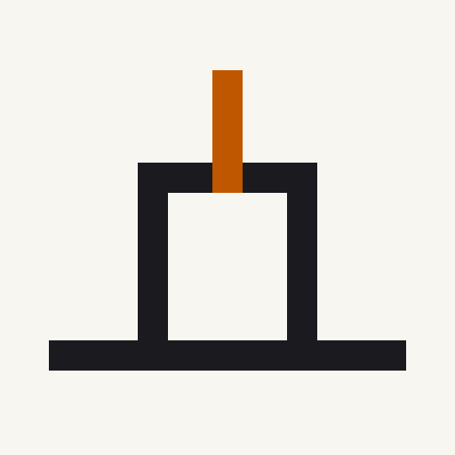
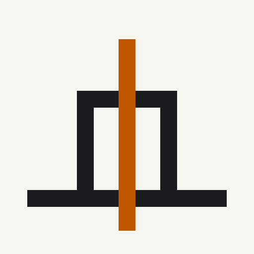
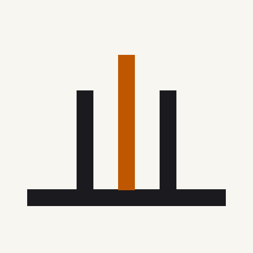
D1 at sizes · wordmark
16
32
96
200
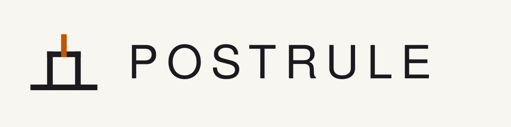
Critic assessments
Three AI design critics with distinct perspectives. Each one saw all 14 marks (4 originals + 10 variants), the B-Tree Labs brand system, and the innovation context, and was asked to give their sharpest opinion.
Top pick: D1 (Gate · original)
"The only mark in the set that reads as architectural infrastructure — a threshold, a ground, a passage — at 16 px, at 200 px, and five years from now when 'AI-branching-tree' marks look like a generation-tagged cliché."
Requested fixes: widen the posts (taller proportions, more torii, less TV-set); break the lintel-post joint perception (butt-join with a tiny pin at each corner, echoing B-Tree Labs' node vocabulary); thin the accent by ~20% so it reads as a value being measured rather than a third post. Vetoed A1, A3, C1, C3.
"Marks that illustrate the thing they're for age badly. Stripe's mark isn't a payment flow; Cloudflare's isn't a proxy cloud; Temporal's isn't a state machine. They're abstract containers that earn meaning through the product. The Dendra set is trying to pre-load meaning into the glyph, which is exactly the move mature infra brands don't make."
Honest close: "There's no designer in the loop. Pick a direction here, then spend $6-12k with an identity designer (Hoodzpah, Character, Mackey Saturday) for two weeks of refinement." Full transcript →
Top pick: D1 (Gate · original)
"The only mark in the set that is architecturally defensible as a standalone glyph. The Π form is closed, symmetrical, and legible as a single silhouette — it owns a shape the way the B-Tree Labs cross owns a shape."
Three specific production-readiness fixes (shipped as
D1' — gate-refined in round 3 below):
shorten the accent from ~104 px to ~72 px so it reads as
a short extension past threshold, not a third post;
merge posts + lintel into a single polyline with miter
joins; add a 28 r graphite center node at the lintel
midpoint so the accent emerges from a dock-point rather
than floating on the lintel stroke (ties to B-Tree Labs'
node vocabulary).
Small-size survivors: D1, D3, A4, A2. Collapse-to-noise at 16 px: A3, C1, C3, all three B variants, D2. Scrapped entirely: A3, B3, C1, C3, D2.
On D2 specifically: "The 48-px parted-floor gap is
wider than the 34-px accent passing through it — the
accent doesn't pierce the floor, it walks through a
doorway." Fix shipped as D2' — gate-rising-refined:
narrow the gap to exactly the accent stroke-width (34 px).
Top pick: D2 (Gate · Rising)
"The mark's argument: 'A floor exists, a threshold exists, and the thing that advances is evidence — a single stroke that begins below the floor, punctures it, and crosses the gate.' That is, almost literally, the theorem. The rule-floor is parted BY the accent — the geometry asserts that the floor is not broken but crossed at a measured point, which is exactly what a McNemar rejection does to the null."
First-read signification: Dendrite reads "neural net," Ascend reads "number go up KPI slide," Curve reads "VC pitch hockey stick," Gate reads "threshold / passage." Only Gate's primary semantic field is passage rather than progress — and passage is what Dendra is actually about.
Of the 14 marks, only two couldn't be lifted wholesale into another AI company's identity: D2 · Gate · Rising and (distant second) A4 · Dendrite · Rooted. Everything else is generic.
Fifth direction proposed (shipped as E · Contingency below): "The contingency table. Dendra's mechanism is a paired-proportion test — a 2×2 of {rule_correct, rule_wrong} × {ml_correct, ml_wrong}. A mark built from a square partitioned into four cells — three graphite, one (the b-cell: 'ml correct where rule was wrong') accent — would be the only logo in the category whose geometry is the product's actual math. It reads as a window, a pixel, a confusion matrix, a crosshair. Distinctly not a tree, a chart, or a neural net. Pairs orthogonally with the Axiom cross. A first-time viewer doesn't need to know McNemar to read it as 'four possibilities, one of them is what we're betting on' — which is fundamentally the pitch."
Round 3 · Critic-driven refinements
Refinements applied per the craft critic's specific construction fixes, plus the semiotic critic's proposed fifth direction built fresh.
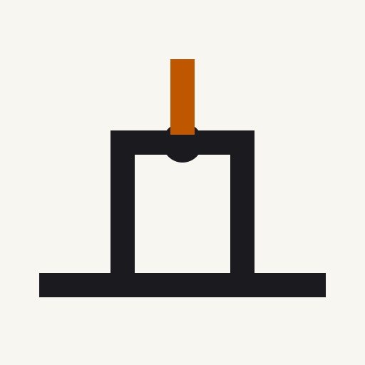
D2' · gate rising refined
D2 with floor gap narrowed to exactly 34 px (the
accent stroke-width). Accent now pierces the floor
cleanly instead of walking through a doorway. Top
pick for the semiotic critic; "carries the theorem."

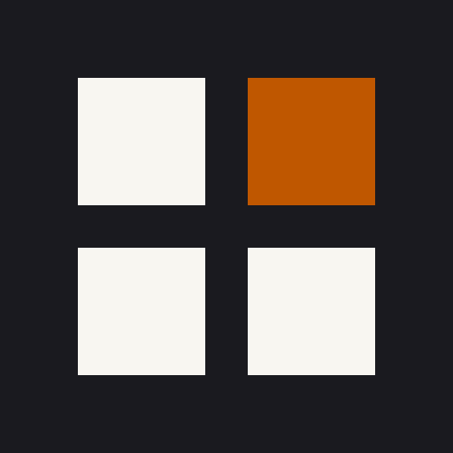
Round-3 candidates at sizes · E wordmark
D1' 32
D1' 96
D2' 32
D2' 96
E light 96E dark 32
E dark 96
Next step
Pick among three round-3 candidates:
- D1' — craft-strongest; portfolio sibling-grammar with B-Tree Labs cross.
- D2' — semiotically strongest; mark argues the theorem.
- E — most category-defining; geometry IS the product's math.
Once picked, follow-up PR exports the full asset set
(favicon 16/32/180/512, dark-ground, monochrome
light/dark, stacked wordmark, 1200×630 Open Graph card)
matching the B-Tree Labs brand-kit structure, replaces the
placeholder favicon, adds the chosen mark to the landing
header, and commits a proper brand/
directory at repo root.
Critic 1's closing advice: "Pick a direction here, then spend $6-12k with an identity designer (Hoodzpah, Character, Mackey Saturday) for two weeks of refinement." That's the right order of magnitude for any of the three.